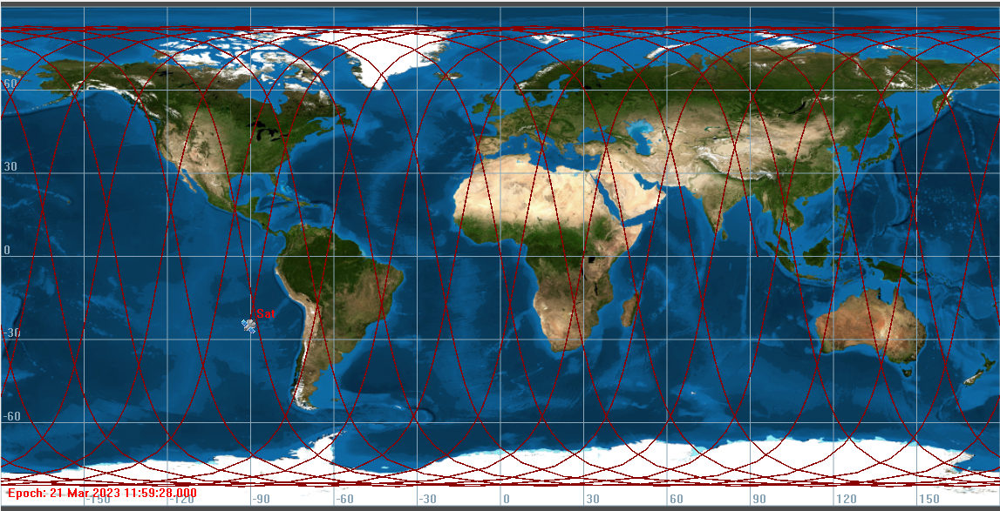
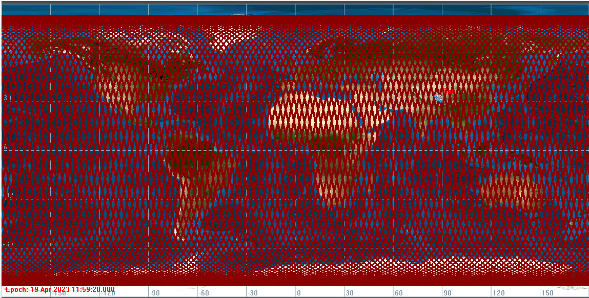
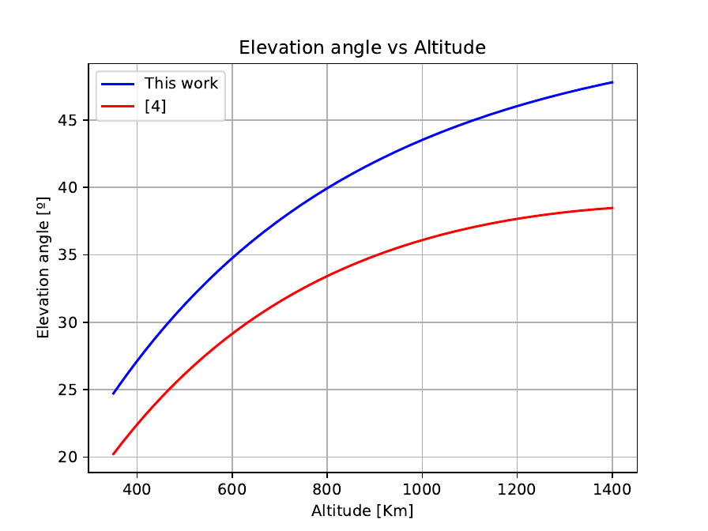
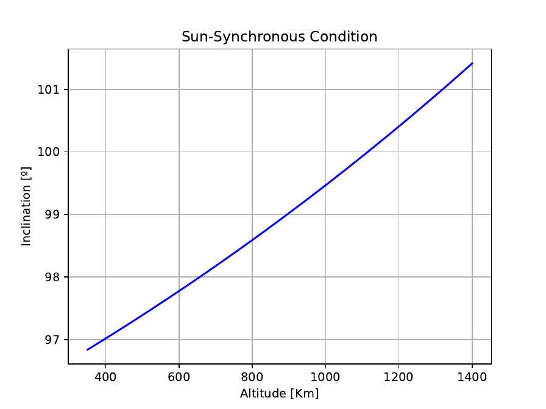
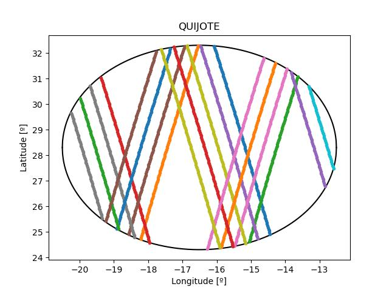
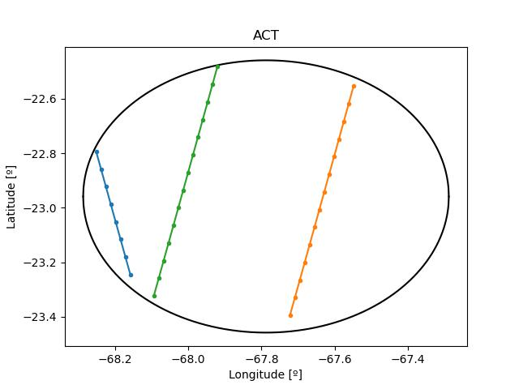
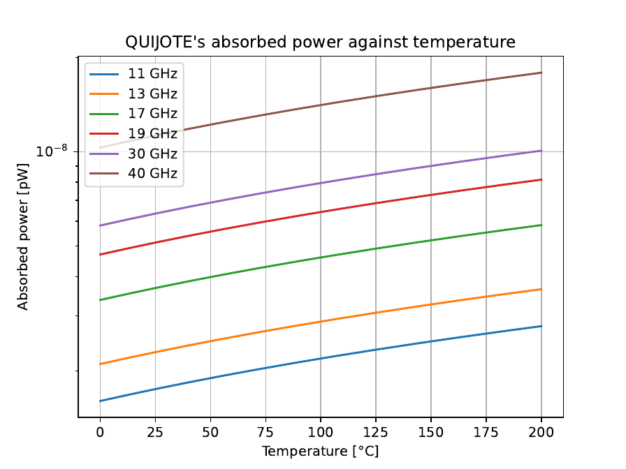

Research internship report · IFCA · 23 November 2023
A review of “Calibration Satellite for Ultra-sensitive Cosmic Microwave Background Polarization Ground-based Experiments” Master’s Thesis
Abstract. A review has been conducted on the calculations performed by Luis Fernando Mejía Jirón in his Master’s Thesis. The thesis addresses the implementation and utility of a calibration source capable of emitting a fully polarized signal in the microwave range, onboard a Low Earth Orbit (LEO) satellite. The purpose of this calibration satellite (CalSat) is to calibrate experiments that measure the polarization of the Cosmic Microwave Background (CMB) from ground-based observatories. The utility of CalSat has been studied by analyzing the number of times it enters the field of view of each experiment. Additionally, a thermal analysis has been conducted to ensure that the generated signal does not cause detector saturation due to the satellite’s temperature, which is not the case in any scenario. Following the same procedures as Mejía Jirón, similar results have been obtained, with differences arising from the approximations used and the location of some experiments.
I. Introduction
During the completion of these external internships, the implementation of a new calibration satellite (CalSat) designed for calibrating ground-based experiments dedicated to measuring the polarization of the Cosmic Microwave Background (CMB) has been studied. It is now well-established that thermal anisotropies in the CMB provide some of the best evidence for the early Universe, enabling the determination of significant cosmological constants. Important theoretical arguments predict the presence of fluctuations in the polarized component of the CMB, known as “B-modes.” According to the inflationary paradigm, which predicts an accelerated expansion of the Universe approximately $10^{-34}$ seconds after the Big Bang, these anisotropies would be a direct evidence of a stochastic background of tensor perturbations (gravitational waves) generated in the primordial Universe. However, these B-modes have not yet been detected as they are several orders of magnitude weaker than temperature fluctuations and are obscured by polarized signals from galactic contaminants.
Multifrequency observations are required to isolate the extremely faint signal of the CMB from the diffuse signal emitted by radiative processes in our galaxy. Below 100 GHz, the polarized emission from the sky is mainly due to radiation produced by the movement of electrons in the galactic magnetic field (synchrotron radiation). Above 100 GHz, the major contaminant is the thermal emission from interstellar dust.
Due to the faintness of the signal, measurement instruments must undergo extremely precise calibrations. For ground-based experiments, this could be achieved by using CalSat in a Low Earth Orbit (LEO) at an altitude of approximately 400 km. CalSat would emit a well-characterized, fully polarized signal in the microwave range, allowing for highly accurate calibration of the instruments.
A. CalSat in a Sun-Synchronous Orbit
The proposed calibration source is expected to be deployed on a CubeSat satellite, as described in references [1] and [2]. A CubeSat is a satellite consisting of multiple cubic units measuring 10 cm × 10 cm × 10 cm arranged in a row. The calibration system is expected to meet the needs of all the studied experiments, allowing for polarization angle calibration, far-field measurements of telescope beam patterns, and intensity response calibration. From CalSat, a linearly polarized signal will be emitted at different wavelengths using microwave sources to cover as much of the frequency band of the experiments to be calibrated as possible.
This satellite will follow a Sun-Synchronous Orbit (SSO), which means it will follow a specific orbit in such a way that it always receives the same amount of sunlight (excluding variations from the Sun). This type of orbit is defined by Equation 1.
where $R$ is the radius of the Earth ($R = R_\oplus = 6371$ km), $\mu$ is the gravitational parameter ($\mu = 398600.440$ km$^3$/s$^2$ for Earth), $a$ and $e$ are the semi-major axis and eccentricity of the orbit, respectively, $i$ is the inclination angle, $J_2$ is the second zonal harmonic coefficient related to the Earth’s flattening ($J_2 = 1.08263 \cdot 10^{-3}$ for Earth), and $\dot{\Omega}$ is the rate of change of the longitude of the ascending node with time. Since the satellite is expected to always receive the same amount of sunlight, meaning it moves in sync with the Earth, the value of $\dot{\Omega}$ is defined [3][4]:
By using Equation 1 and assuming a circular orbit ($e \approx 0$), we can find a direct relationship between the inclination angle and the altitude ($h = a - R_\oplus$), as shown in Equation 2.
The orbital period can be calculated using Equation 3, so with the specific data known, we can determine that the orbital period ($T$) of CalSat is 1.54 hours. In other words, CalSat completes a total of 15.6 orbits around the Earth per day.
B. Experiments
Information has been compiled on five ground-based experiments: Q-U-I-JOint TEnerife (QUIJOTE) [5], Cosmology Large Angular Scale Surveyor (CLASS) [6], Atacama Cosmology Telescope (ACT) [4], Large Scale Polarization Explorer (LSPE-STRIP) [4], and POLARization of the Background Radiation (POLARBEAR-2) [7][8]. The basic characteristics of each experiment can be seen in Table I. More detailed information about each experiment can be found in Tables II, III, IV, V and VI. The QUIJOTE and LSPE-STRIP experiments are located on the island of Tenerife, Spain, while the CLASS, ACT and POLARBEAR-2 experiments are located in the Atacama Desert in Chile. Initially, the SPTpol experiment was also going to be studied, but it was excluded due to its location (at the geographic South Pole) [9] and the low elevation angle from which it would be observed by CalSat (see Section III).
Table I. Basic information of longitude (Long), latitude (Lat), field of view (FoV), and telescope aperture (At) for each of the studied experiments.
| Experiment | Long | Lat | FoV [°] | At [m] |
|---|---|---|---|---|
| QUIJOTE | −16.506 | 28.300 | 8 | 2.25 |
| CLASS | −67.7833 | −22.967 | 16 | 0.46 |
| ACT | −67.7875 | −22.959 | 1 | 6.00 |
| LSPE-STRIP | −16.5106 | 28.301 | 5 | 1.50 |
| POLARBEAR-2 | −67.786 | −22.958 | 4.8 | 3.50 |
Table II. Characteristic information (central frequency and bandwidth) of the QUIJOTE experiment [4][5].
| ν0 [GHz] | 11 | 13 | 17 | 19 | 31 | 41 |
|---|---|---|---|---|---|---|
| Δν0 [GHz] | 2 | 2 | 2 | 2 | 10 | 12 |
Table III. Characteristic information (central frequency and bandwidth) of the CLASS experiment [4][6].
| ν0 [GHz] | 40 | 90 | 150 | 220 |
|---|---|---|---|---|
| Δν0 [GHz] | 10 | 31 | 36 | 34 |
Table IV. Characteristic information (central frequency and bandwidth) of the ACT experiment [4].
| ν0 [GHz] | 28 | 41 | 90 | 150 | 230 |
|---|---|---|---|---|---|
| Δν0 [GHz] | 6 | 19 | 39 | 41 | 100 |
Table V. Characteristic information (central frequency and bandwidth) of the LSPE-STRIP experiment [4].
| ν0 [GHz] | 43 | 95 |
|---|---|---|
| Δν0 [GHz] | 7.31 | 7.6 |
Table VI. Characteristic information (central frequency and bandwidth) of the POLARBEAR-2 experiment [7][8].
| ν0 [GHz] | 95 | 150 |
|---|---|---|
| Δν0/ν0 | 0.324 | 0.260 |
C. Elevation angle
For the determination of the elevation angle, we have approximated a small region of the Earth’s surface to a straight line, so that the expression of the elevation angle as a function of the altitude of the CalSat can be seen in Equation 4.
where $\alpha$ is the elevation angle. On the other hand, this expression has been compared to the one used in [4], approximating the CalSat’s orbit at the poles as a straight line, with the expression described in Equation 5.
In Section III, the reason for using two different equations is explained in detail.
D. Thermal control
On the other hand, after implementing a simulation using the software ASATAN, it has been concluded that the maximum temperature reached on the surface of the CalSat’s solar panels, when directly facing the Sun, is 39°C [4]. Assuming this is the temperature reached by the entire CalSat, the solar panels emit thermal radiation that could saturate the detectors. Therefore, a thermal analysis has been conducted.
The power absorbed by the detectors due to the thermal emission from the CalSat’s solar panels is given by Equation 6 [4].
where $A_r$ is the reflecting area (assuming it is circular with a diameter $D_a$), $c$ is the speed of light, $k_B$ is the Boltzmann constant, $\epsilon$ is the relative bandwidth ($\epsilon = 30\%$), $T$ is the temperature, and $d$ is the distance between CalSat and the experiment (assuming $d = 400$ km). The worst-case scenario has been assumed, where the temperature of CalSat is at its maximum and all solar panels are oriented towards the experiment.
II. Methods
The following steps have been carried out for the satellite orbit simulation. The NASA software called GMAT1 (General Mission Analysis Tool) was used for the simulation. The satellite was configured with time format “A1Gregorian”, date set to March 20, 2023, at 11:59:28. The state type was set to “Keplerian” with the orbital parameters shown in Table VIII.
Table VIII. For a helio-synchronous orbit on the given date, the orbital parameters are semimajor axis (SMA), eccentricity (ECC), inclination (INC), right ascension of the ascending node, argument of perigee and true anomaly (TA) [4].
| Parameter | Value |
|---|---|
| SMA [km] | 6778 |
| ECC | 0.0001 |
| INC [°] | 97.025 |
| RAAN [°] | 90 |
| AOP [°] | 0 |
| TA [°] | 0 |
The next step is to select the “Ground Station” folder and add the five considered experiments, entering their positions in spherical coordinates (longitude and latitude) on the Earth’s surface. The maximum step size was set to one second (Max Step Size = 1 s). Once the GMAT script was completed, a Python code (available in the public GitHub repository) was used to check the dependencies mentioned in Section I, to assess the usefulness of launching this satellite for calibrating the experiments, to count the number of times the satellite passes over each experiment and to conduct the thermal analysis described in Section I.
III. Results and Discussion
Firstly, the CalSat.script file was executed in GMAT for four different time periods: one orbit ($t = 5544$ s), one day ($t = 86400$ s), one week ($t = 604800$ s), and one month or 30 days ($t = 2592000$ s). The trajectory of the satellite during these time periods can be seen in Figures 1–4.


Once the GMAT software was executed, the Python code was run, resulting in the dependency of the elevation angle ($\alpha$) shown in Figure 5 and the dependency of the inclination angle ($i$) shown in Figure 6 with respect to the altitude ($h$).


In Figure 5, the results of the calculations using Equation 4 (in blue) and Equation 5 (in red) can be observed. Equation 4 is based on approximating the Earth’s curvature as a straight line, while Equation 5 approximates the curvature of the orbit as a straight line. This difference becomes significant when considering two separate curvatures over a distance of 400 km with a common central point. Due to the nature of the approximations made, Equation 5, derived in [4], is more accurate due to the greater distance from the origin and, therefore, a larger radius of curvature. Despite concluding that the approximation used in [4] is more accurate than the one used in this work, both expressions have been kept to emphasize the importance of minimizing approximations as much as possible for greater reliability.
Once this initial analysis is completed, the program counts how many times the CalSat has passed over each experiment. It has been determined that the CalSat passes over the QUIJOTE experiment 19 times, over the CLASS experiment 42 times, over the ACT experiment 3 times, over the LSPE-STRIP experiment 14 times and 12 over POLARBEAR-2, as shown in Figure 7. The main differences in the number and shape of the passages are due to the different positions of the experiments and the sizes of the FoVs.


For this case, the maximum, minimum, average, and total observation times of the CalSat from each experiment have been calculated, and they are summarized in Table IX.
Table IX. The number of passes, minimum, maximum, average, and total observation times for each experiment.
| Experiment | Passes | tmin [s] | tmax [s] | tmean [s] | ttot [s] |
|---|---|---|---|---|---|
| QUIJOTE | 19 | 50 | 121 | 101.1 | 1921 |
| CLASS | 42 | 50 | 242 | 192.6 | 8089 |
| ACT | 3 | 7 | 113 | 11.0 | 33 |
| LSPE-STRIP | 14 | 35 | 75 | 59.7 | 836 |
| POLARBEAR-2 | 12 | 18 | 71 | 59.7 | 716 |
The small variations in the number of passes observed between our simulations and the values reported in [4] are not considered significant, except for the case of the ACT experiment. Since the CalSat passes very few times over the field of view of the ACT experiment, even a small variation can result in a significant change. For example, if the field of view is increased by 10%, the CalSat would pass over the experiment’s field of view 4 times, although one of these passes may be tangential in nature. It is important to note that these variations can be attributed to different factors such as variations in the satellite’s orbit, observational constraints, or slight differences in the simulation parameters. However, the overall trends and patterns remain consistent, and the simulations performed with the same parameters consistently yield similar results.
A. Time change
The number of times CalSat passes over the field of view of each experiment varies with the starting time of the simulation. It is clear that for the case of the ACT experiment, the starting time of the simulation (even by a minute) is crucial. This is because with a smaller field of view, precision becomes extremely important, as CalSat can pass tangentially to the field of view or stay just a few seconds away from entering it. The results are summarized in Table X.
Table X. Comparison of the number of times CalSat is observed by each experiment if it becomes operational for 30 days starting on March 20, 2023, at the specified times.
| Experiment | 11:59:28.0 | 12:00:54.4 | 11:58:28.0 | 12:00:28.0 |
|---|---|---|---|---|
| QUIJOTE | 19 | 21 | 20 | 21 |
| CLASS | 42 | 42 | 43 | 42 |
| ACT | 3 | 2 | 4 | 3 |
| LSPE-STRIP | 14 | 13 | 15 | 14 |
| POLARBEAR-2 | 12 | 13 | 12 | 12 |
B. Thermal control
Finally, the Python code executed the thermal analysis of the emissions from the different antennas of the calibration source onboard the satellite, resulting in Figure 8. According to [4], it is known that the absorbed power is several orders of magnitude lower than the saturation power, so CalSat should not pose any problem in this regard.
The thermal emission from the solar panels at a temperature of 39°C was also studied, and the results obtained were similar to those reported in [4].

IV. Conclusions
A review has been conducted on the calculations presented in [4] regarding the CalSat, a calibration satellite for ground-based experiments studying the polarization of the Cosmic Microwave Background (CMB). The experiments studied for the CalSat implementation are located in the Tenerife and Atacama observatories.
The visibility of the CalSat has been studied for each experiment over the course of a month (30 days). It is evident that the smaller the field of view of the experiment, the fewer times the passage of the CalSat will be detected. However, the significant dependence on the launch time of the CalSat or the field of view was unexpected, with extreme importance in experiments similar to ACT, with a small field value, leading to changes of around 33%. Experiments such as SPTpol have been excluded from the study because, due to their location, the maximum elevation angle is on the order of $(24 \pm 2)^\circ$, making calibration considerably challenging due to atmospheric effects. For experiments with a low observation time, it could be worth considering the possibility of tracking the CalSat to increase this time. However, since the experiments with the shortest observation time are also the largest ones, it is possible that tracking the CalSat would be impractical due to the low speed at which the experiment’s telescope moves.
Finally, a thermal analysis was conducted to assess the risk of receiver saturation, and it has been completely ruled out as the maximum absorbed power is several orders of magnitude lower than the saturation power [4].
References
- [1] B. R. Johnson, C. J. Vourch, T. D. Drysdale, et al., “A CubeSat for calibrating ground-based and suborbital millimeter-wave polarimeters (CalSat),” Journal of Astronomical Instrumentation, vol. 04, no. 03n04, Dec. 2015. doi: 10.1142/s2251171715500075.
- [2] F. J. Casas, E. Martínez-González, J. Bermejo-Ballesteros, et al., “L2-calsat: A calibration satellite for ultra-sensitive cmb polarization space missions,” Sensors, vol. 21, no. 10, 2021. doi: 10.3390/s21103361.
- [3] R. Boain, “A-B-Cs of Sun-Synchronous Orbit Mission Design,” Feb. 2005.
- [4] L. F. M. Jirón, Calibration satellite for ground-based ultra-sensitive CMB polarization experiments, Master’s Thesis, 2022.
- [5] F. Poidevin, J. A. Rubino-Martin, R. Genova-Santos, et al., The QUIJOTE experiment: Prospects for CMB B-mode polarization detection and foregrounds characterization, 2018. arXiv: 1802.04594 [astro-ph.CO].
- [6] T. Essinger-Hileman, A. Ali, M. Amiri, et al., “CLASS: The Cosmology Large Angular Scale Surveyor,” in SPIE Proceedings, SPIE, Jul. 2014. doi: 10.1117/12.2056701.
- [7] Y. Inoue, P. Ade, Y. Akiba, et al., “POLARBEAR-2: An instrument for CMB polarization measurements,” in SPIE Proceedings, SPIE, Aug. 2016. doi: 10.1117/12.2231961.
- [8] B. Westbrook, P. A. R. Ade, M. Aguilar, et al., “The POLARBEAR-2 and Simons Array focal plane fabrication status,” Journal of Low Temperature Physics, vol. 193, no. 5–6, pp. 758–770, Sep. 2018. doi: 10.1007/s10909-018-2059-0.
- [9] E. M. George, P. Ade, K. A. Aird, et al., “Performance and on-sky optical characterization of the SPTpol instrument,” in SPIE Proceedings, SPIE, Sep. 2012. doi: 10.1117/12.925586.
- [10] Anteral. “Lens Horn Antennas (LHA) - Anteral.” Available: https://anteral.com/products/antenna-passives/lha-lens-horn-antennas/. (accessed: 24.04.2023).